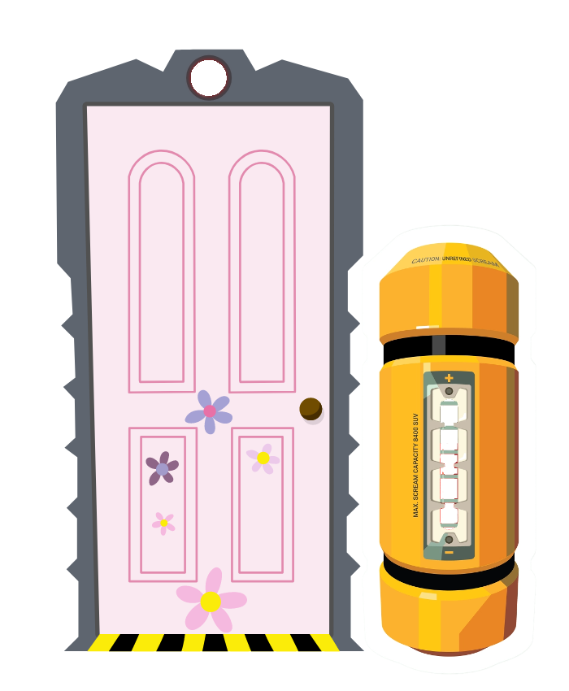

¡Bienvenido al Simulador de Gritos!
Instrucciones del juego:
Al igual que en las peliculas, ¡debes de gritar tan alto como puedas! (Sin
romper la bateria claro).
Conforme vayas subiendo de volumen tu grito, la bateria y la puerta se
irán encendiendo de poco en poco.
El nivel de tu grito actual es de:
%DECIBEL%